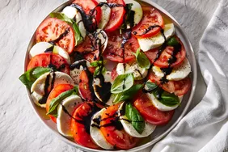

Caprese Salad

Experience the vibrant flavors of Italy with our Caprese Salad. This refreshing dish showcases ripe tomatoes, creamy mozzarella cheese, and fragrant basil leaves, drizzled with extra virgin olive oil and balsamic glaze. Each bite offers a burst of summer freshness and a delightful balance of textures. Whether served as a starter, a side dish, or a light lunch, this salad is a perfect blend of simplicity and deliciousness.
Ingredients
- 2-3 ripe tomatoes, sliced
- 8 ounces fresh mozzarella cheese, sliced
- Fresh basil leaves
- Extra virgin olive oil
- Balsamic glaze
- Salt and pepper, to taste
Preparation Steps
1. Assemble the Salad:
- Arrange alternating slices of tomatoes and mozzarella cheese on a serving platter.
- Tuck fresh basil leaves between the tomato and cheese slices.
2. Season:
- Drizzle extra virgin olive oil over the salad.
- Drizzle balsamic glaze over the tomatoes and mozzarella.
- Season with salt and pepper to taste.
3. Serve:
- Serve immediately to enjoy the fresh flavors.
- Optionally, garnish with additional basil leaves and a sprinkle of freshly ground black pepper.